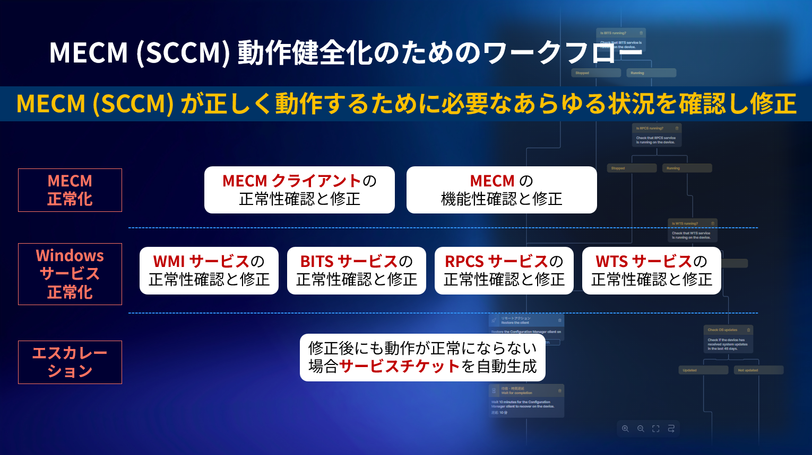

Nexthink
DEMO Portal
DEX デモ用カスタムポータル (注) 製品のコンソールではありません。
Digital Employee Experience
ITコストの最適化、サポートの自動化、そして戦略的なデジタルガバナンスの実現。Nexthinkが提供する次世代のIT運用管理を体感してください。
1. CAPEX/資産管理
2. 障害対応/分析
3. ヘルプデスク
4. 戦略/ガバナンス
5. セキュリティ
6. その他
1. CAPEX 削減と資産管理
コスト最適化 (CAPEX削減)
💻 インテリジェント・ハードウェア交換
端末の状態を確認し交換可否を判断
🖼️ インテリジェント・ハードウェア交換 (画面キャプチャ)
端末の状態を確認し交換可否を判断
🧩 ソフトウェア・アセット適正化
全社的なアプリ利用状況の分析
💸 ソフトウェア・アセット適正化(コスト分析)※英語版
利用状況に基づいたコスト分析
特定資産詳細と従業員アンケート
📄 Adobe Acrobat 利用状況
有償ライセンスの実際の利用状況精査(低利用時間のユーザも特定)
☁️ Microsoft 365 利用状況
M365各サービスの実際の利用状況精査(低利用時間のユーザも特定)
📝 従業員向けアンケート
(例)資産の棚卸に関する従業員アンケート
2. 障害対応と分析
アラートと AI 分析機能
🔔 アラート・ハブ
全社規模の障害や体験低下をリアルタイム検知
✨ 管理者向け AI Assist
AI Powered
管理者向けの分析支援
ワークフロー (ServiceNow 連携)
⚙️ ディスククリーンアップ (画面キャプチャ)
ワークフローでディスククリーンアップとサービスチケット起票まで自動化
デバイス・ネットワーク診断
📍 デバイス診断(個別)
特定のデバイスにフォーカスした詳細調査(Device 360°)
📊 デバイス診断(全社)
デバイスに関連する健全性を包括的に分析
📱 モバイル診断(全社)
モバイルデバイスの健全性を包括的に分析
📱 モバイル診断(全社)※最新英語版
モバイルデバイスの健全性を包括的に分析
📶 ネットワーク診断①
ネットワークの健全性を包括的に分析
🚀 ネットワーク診断②
ダウンロード・アップロード状況の可視化
アプリケーション / SaaS 診断
📞 通話品質診断(Teams/Zoom)
音声途切れや切断の原因の絞り込み
🏢 SAP S/4 HANA 診断
基幹システムの応答速度と分析
☁️ Salesforce 診断
CRMシステムの応答速度と分析
✉️ MS Outlook 診断
クライアントアプリの分析
3. ヘルプデスクの効率化
チケット対応の効率化と自動化
🛠️ チケット対応効率化(MTTR 短縮)
ITSM から数クリックで診断・修復
※ 事前に Amplify プラグインの設定と認証が必要
🤖 従業員向け AI ヘルプデスク (SPARK)
AI Agent
従業員がチャットで問題を自己解決
※ 事前にデモスクリプト(/startdemojp)の実行が必要
※ Microsoft PowerBI
4. 戦略とガバナンス
生成AIの可視化と促進
📈 生成AIの利用状況分析
AIツールの普及度と活用傾向を可視化
🏢 MS Copilotの利用状況分析
MS Copilotの普及度と活用傾向を可視化
🔀 認可 AI へのリダイレクトとユーザガイド
「未認可AI」から「認可AI」へのリダイレクトと使い方ガイド
※ 事前に Nexthink または Nexthink(Beta) プラグインの設定と認証が必要
🔍 Shadow AI 可視化
未認可生成 AI の利用状況可視化
従業員体験向上とサステイナブルIT
🎯 DEX スコア管理 (XLA)
デジタル体験を数値化し中長期での改善を検討
📊 従業員アプリ利用分析
Web/SaaS, ローカルアプリの利用状況分析
🍃 サステイナブル IT ダッシュボード
デバイスの電力効率とCO2排出削減
5. セキュリティ & コンプライアンス
セキュリティとコンプライアンス
🔒 セキュリティエージェントの健全性
クラッシュやフリーズの状態を可視化
🔍 怪しいバイナリ検出
製品名が不明、利用率が低いバイナリの検出
🕵️ Shadow IT 可視化
Shadow IT の利用状況可視化
✅ Windows OS コンプライアンス
パッチ適用状況等のガバナンス状況を包括的に確認
配信ツールの健全化
⚙️ Intune 自動修復 (ワークフロー)
Intune が本来動作する状況にするための自動ワークフロー
📊 MECM (SCCM) 健全性 (ダッシュボード)
MECM(SCCM)の健全性確認
🛠️ MECM (SCCM) 自動修復 (ワークフロー)
MECM(SCCM)が本来動作する状況にするための自動ワークフロー

6. その他ユースケース
カスタムコンテンツ
📄 印刷枚数の集計 (画面キャプチャ)
端末ごとの印刷状況の可視化